САУЛ СТЕЙНБЕРГ
Классика современной иллюстрации
Начну с работы над ошибками. В прошлый раз банально забыл про любимого своего художника Батынкова, о чем мне, к счастью, немедленно напомнили.
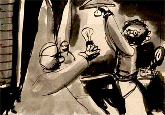
Вообще-то давайте проясним, я не ставлю перед собой задачи написать энциклопедию иллюстрации, а только излагаю некоторые свои о ней субъективные представления. Основательный научный подход в этом деле мне кажется неуместным, потому иллюстрация, как и вообще рисование, дело скорее интимное и интуитивное. Хотелось бы сохранить интонацию разговора о погоде, не переходя на механизмы образования циклонов и тому подобного. Не говоря уже о том, что того же Батынкова никак невозможно обсуждать в терминах профессиональной иллюстрации: он над.
Есть, тем не менее, фамилии и кроме этой, которых мне не упомянуть никак нельзя. Сегодня я напишу про Саула Стейнберга, и, поскольку я совершенно уверен, что тем, кто сюда заходит, рассказывать про него не нужно, будем считать это необходимой формальностью.
Краткая биографическая справка. Стейнберг родился в Румынии в 1914-ом, позже перебрался в Италию, а оттуда — в США (что в 41-ом году с его фамилией было весьма кстати), где немедленно занялся иллюминацией журналов и книг. Получил гражданство, послужил во флотской разведке, порисовал пропагандистские карикатуры; после войны по поручению журнала Нью-Йоркер объехал полмира с блокнотом и пером.
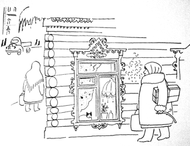
[Сотня его обложек для Нью-Йоркера](https://web.archive.org/web/20070112123136/http://www.cartoonbank.com/search_results_category.asp?mscssid=H8GEL3K7FEH68L6DKL9KV1VR38149476&sitetype=1&advanced=1&oldS ection=all&artist=Saul+Steinberg§ion=covers) значит для современной графики не меньше, чем для поэзии — полтораста сонетов Шекспира. Классика.
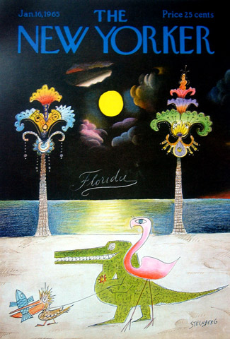
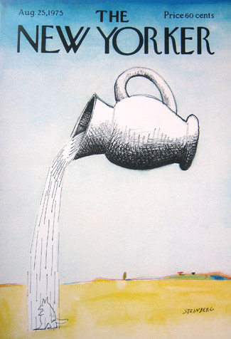
Нью-Йоркеру, который он звал своей «отчизной», Стейнберг отдал большую часть своей трудовой жизни. Во многом своим особенным положением в контексте вообще богатейшей культуры англоязычных иллюстрированных изданий, своим собственным тонким ароматом и статусом иллюстраторского фетиша и мекки Нью Йоркер обязан именно ему. Больше того, сам город Нью-Йорк приобрел в Стейнберге чуть не главного своего певца.
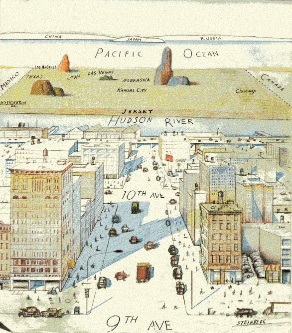
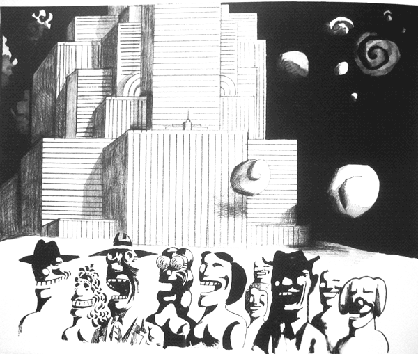
Другая любимая у него история — буквы, цифры и разнообразные абстрактные понятия. Этим от него доставалось по первое число.
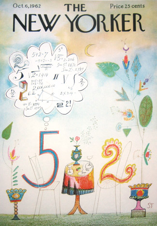
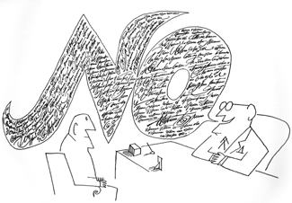
Но главный его герой, альтер эго, так сказать — это сама линия.
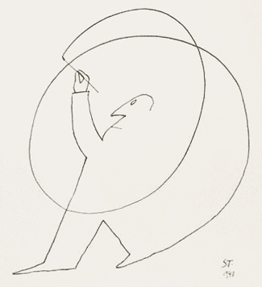
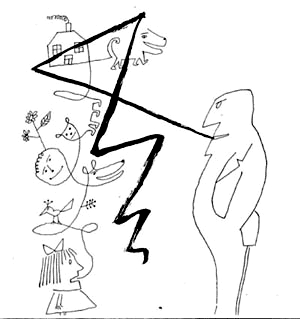
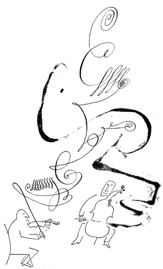
Он играет на ней как на музыкальном инструменте, непрерывно импровизирует, дает ей жить своей собственной жизнью. Она сама выбирает куда свернуть и по пути, именно что на ровном месте, сама находит идею.
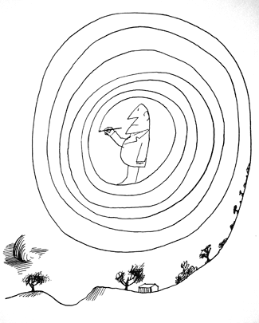
Стейнберг рисует с такой легкостью, что кажется, закрой глаза, пусти руку чертить по бумаге, и на ней сами собой зацветут невиданные цветы и забегают туда-сюда люди. Фиг. Проверял. Моя жизнь, друзья, отравлена завистью к людям, которые рисуют набело. Ей-богу, просто не укладывается в голове, как так можно взять тушь, перо и нарисовать. Я все понимаю, годы упорного труда и миллионы выброшенных набросков, но тут, опять же, что-то покруче профессионализма. Гений, наверное.
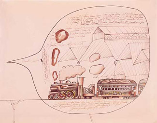
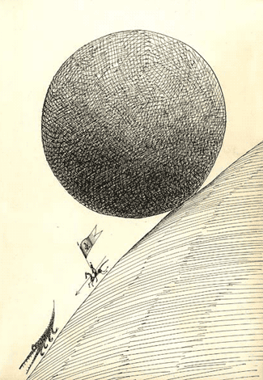
Многое подцепив у Пикассо, а вернее, возделав одну из тех земель, которые тот походя открыл,
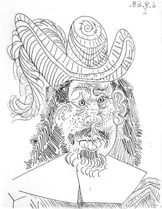
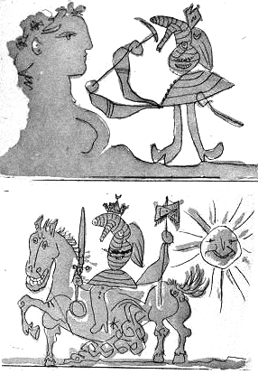
а также взяв все, что ему было нужно у Малевича, Кандинского, Клее и прочих модернистов,
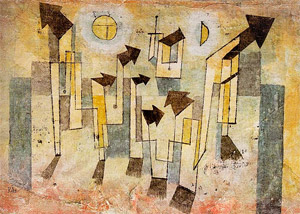
Стейнберг стал без преувеличения самым влиятельным иллюстратором всех времен. Перед его обаянием трудно устоять и сейчас, а лет так 30 назад глупо было и пытаться. Стейнберга растащили на цитаты, но осталось больше, чем было. Во многом он остался непревзойденным. Из выросших под его крылом первым приходит на ум Хейнц Эдельманн,
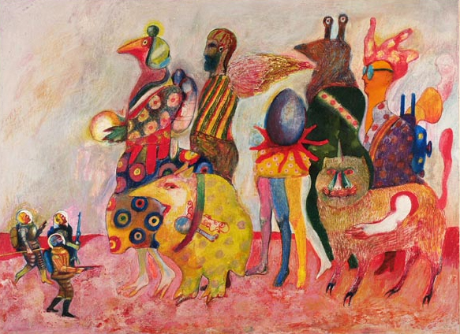
нарисовавший, в частности, «Желтую подводную лодку».
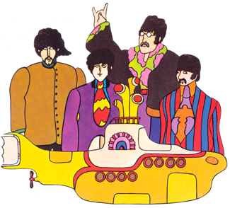
Мне, например, очевидна ее родственная связь со стейнберговским нью-йоркским желтым такси:
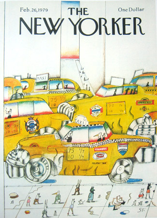
прекрасный соратник Стейнберга по Нью-Йоркеру Арнольд Рот,
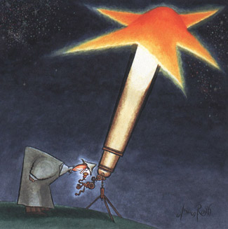
мной лично обожаемый, Рендалл Энос
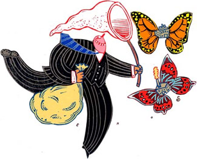
(это если не говорить обо всей бизнес-иллюстрации вообще (мы лучше о ней как-нибудь отдельно).
Наш выдающийся соотечественник В. Пивоваров (о котором тоже в свой срок отдельно)
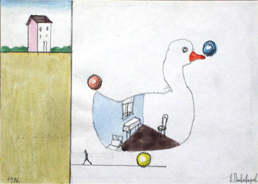
в 70-е годы стиль Стейнберга во многом определил лицо Загребской школы анимации —
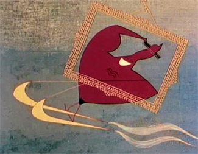
лучшим произведениям которой, что для нас важнее, можно постфактум считать фильм Федора Хитрука «Фильм, фильм, фильм», где Стейнберга поминает чуть ли не каждая деталь (см.также фоны в «Винни-Пухе»)
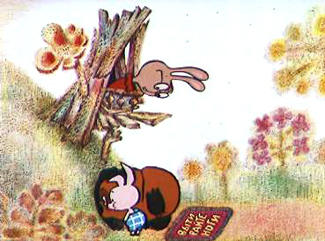
художник-постановщик - прекраснейший из эпигонов Стейнберга Владимир Зуйков.
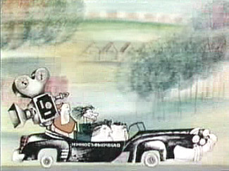
Многие должны помнить изрисованные им книжки про КОАПП, где стиль Стейнберга, как ни удивительно, додуман и улучшен.
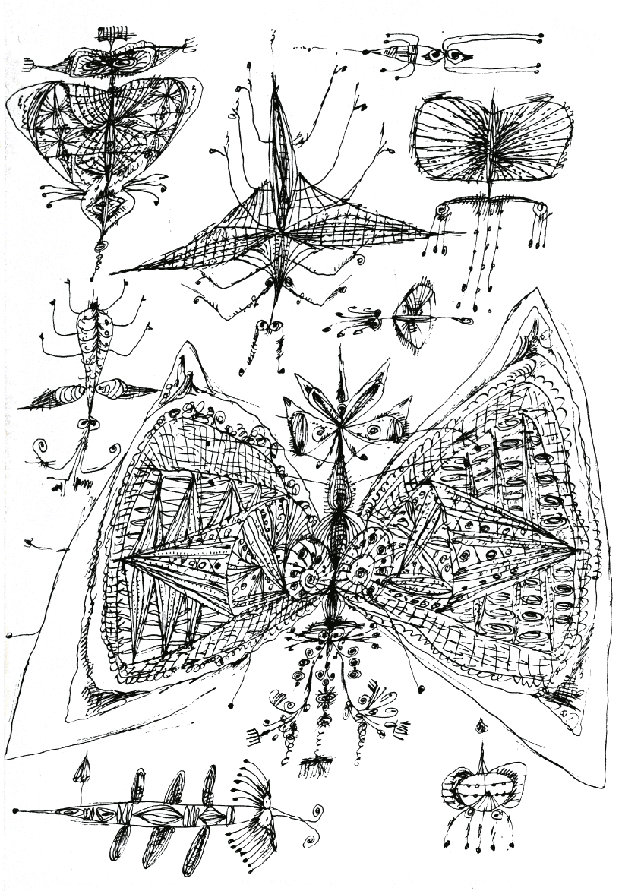
Напоследок вот вам небольшое чудо от Стейнберга, называется «Загородные Шумы».
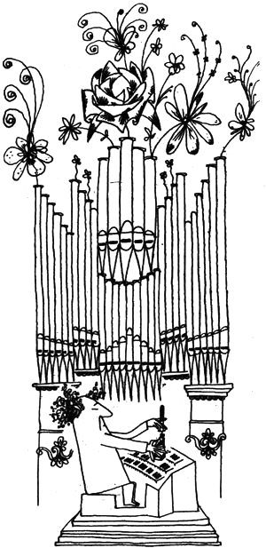